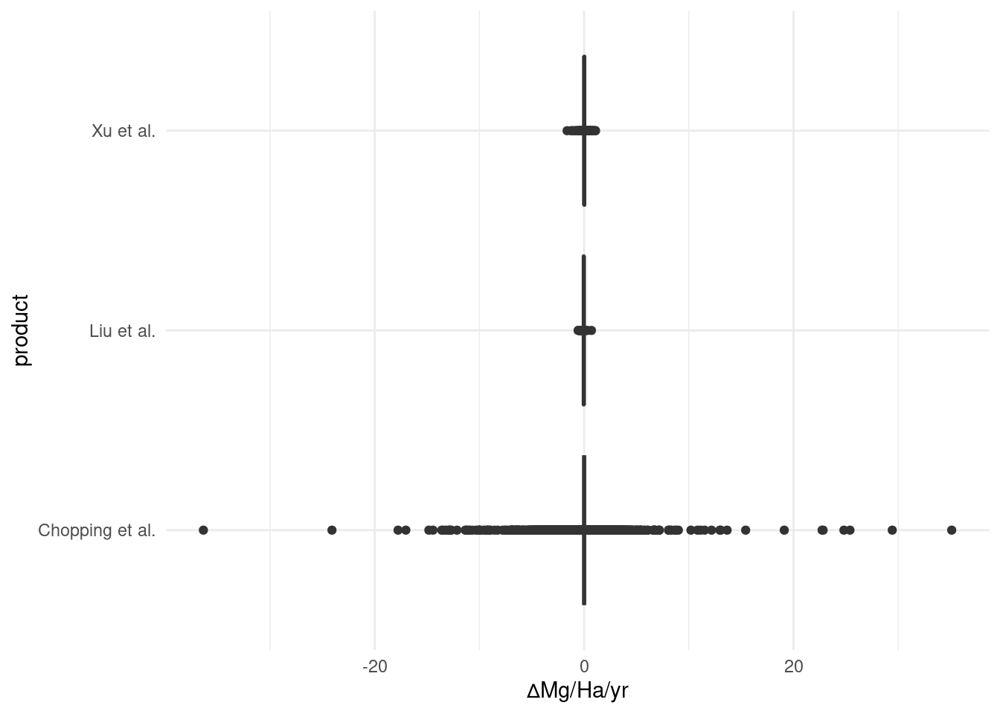

library(targets)library(here)library(terra)library(tidyterra)library(purrr)library(dplyr)library(ggplot2)library(ragg)library(ggtext)tar_load(c(slope_liu_agb, slope_chopping_agb, slope_xu_agb), store =here("_targets"))df <-map(c("Liu et al."= slope_liu_agb,"Chopping et al."= slope_chopping_agb,"Xu et al."= slope_xu_agb), \(x) as_tibble(x, na.rm =TRUE) |>select(-p.value)) |>list_rbind(names_to ="product")df
# A tibble: 4,733,850 × 2
product slope
<chr> <dbl>
1 Liu et al. -0.0340
2 Liu et al. -0.0453
3 Liu et al. -0.0465
4 Liu et al. -0.0335
5 Liu et al. -0.0256
6 Liu et al. -0.0231
7 Liu et al. -0.0180
8 Liu et al. -0.0129
9 Liu et al. -0.0217
10 Liu et al. -0.0223
# ℹ 4,733,840 more rows
Code
theme_set(theme_minimal(base_family ="sans"))
Visualizing the distribution of values among these datasets is tricky for two reasons:
Their resolution and therefore sample size varies by several orders of magnitude. E.g. the LT-GNN dataset (not shown) has tens of millions of values and the Liu et al. dataset has 492.
In some products, the most common slope by far is 0.
Code
df |>count(product)
# A tibble: 3 × 2
product n
<chr> <int>
1 Chopping et al. 4730365
2 Liu et al. 492
3 Xu et al. 2993
# A tibble: 3 × 2
product `% slopes = 0`
<chr> <dbl>
1 Chopping et al. 75.1
2 Liu et al. 0.610
3 Xu et al. 8.19
Code
df |>group_by(product) |>summarize(`% slopes near 0`=sum(dplyr::near(slope, 0, tol =0.01)/dplyr::n())*100)
# A tibble: 3 × 2
product `% slopes near 0`
<chr> <dbl>
1 Chopping et al. 79.4
2 Liu et al. 17.3
3 Xu et al. 26.8
Boxplots
Standard boxplots are probably not a good fit since any values outside of 1.5 * IQR are “outliers” and because there are so many data points, a lot are “outliers”
Code
p <-ggplot(df, aes(x = slope, y = product)) +labs(x ="∆Mg/Ha/yr")p +geom_boxplot()

You can remove “outliers”, but I’m not sure that’s the best idea. Chopping et al. has so many points, that it looks like all non-zero points are “outliers”.
Code
p +geom_boxplot(outliers =FALSE)
Violin plots
These don’t look great because even if you were to add lines for median and IQR, you wouldn’t be able to see them.
Code
p +geom_violin()
Point interval
This is what I settled on for now. The points show the median data value, the thick lines show the IQR (25th and 75th percentiles) and the thin lines show the middle 80% of data (10th and 90th percentiles). The vertical dashed line just shows where 0 is.